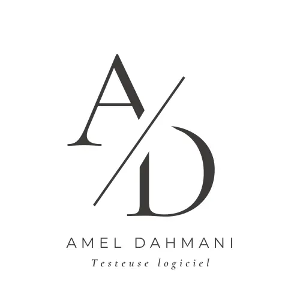

Mon profil
Issue de la branche du commerce, avec une expériences en communication et marketing, j'ai découvert le test logiciel en réalisant des tests manuels dans une start-up développant une application SAAS, où j'y travaillait en tant Community Manager. Suite à un interêt grantissant pour le test, je me suis lancée, grâce au soutiens de mes collègues devevelopeurs, dans une formation de testeur chez Openclassrooms . Aujourd'hui, je suis testeuse logiciel, tant manuels qu'automatisés.
Pourquoi le test logiciel ?
Le test logiciel m'a rapidement interessé pour plusieurs raisons :
- La recherche de bugs et l'exploration de tous les cas possibles me passionne.
- L'amélioration continue afin d'optimiser la fluidité, la sécurité et l'esthétique du produit
- Des compétences en phase avec mes expériences en marketing et communication digitale.
- L'importance de l'empathie et la communication afin de bien collaborer avec l'équipe.
Mes compétences
Mes projets
Contactez-moi
Téléphone
06-06-06-06-06
Adresse email
email.de.test@gmail.com
Nom test